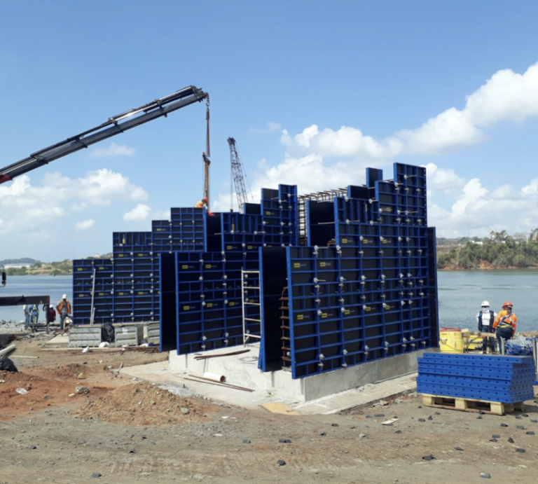

El encofrado con paneles framini trae muchos beneficios a la obra, desde el ahorro de costos hasta el tiempo para encofrar y fundir elementos estructurales, con equipo y accesorios muy fáciles y sencillos de utilizar para crear el molde que sea necesario.
